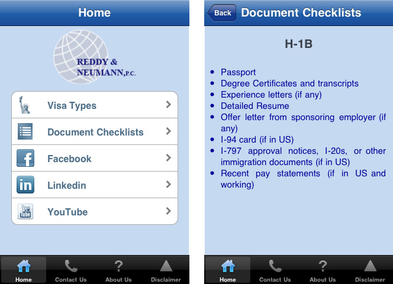
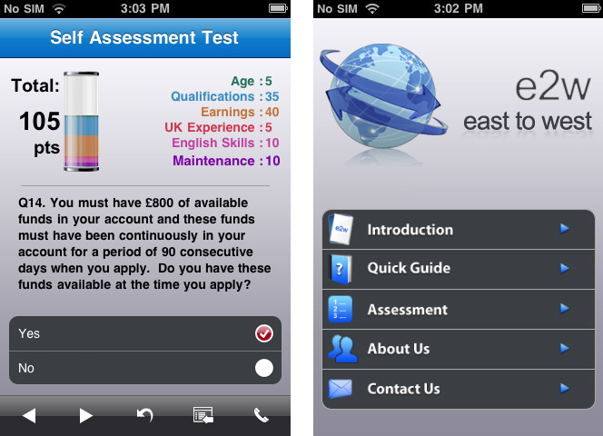

Research: Apps in Similar Space
iStayLegal Immigration
iPhone App (App Store Link)
Description: This App is designed for the clients or potential clients of the immigration law firm of Reddy and Neumann, P.C. based in Houston, Texas. With this App, clients can research Visa types, view detailed document checklists for your specific type of case, and get instant updates on immigration issues through the built-in RNLawgroup Facebook and Twitter features. Unable to attend a presentation by RNLawgroup? You can now view the full database of presentations by our expert immigration attorney on a number of relevant topics. Not a client yet, or just have a quick question for an attorney? You can submit your question instantly right from the App!
e2w uk ltd - Immigration Quick Guide and Self Assessment Tool
iPhone App (App Store Link)
Description:The Quick Guide and Self-Assessment Tool provides an intuitive, easy to use, “Quick Guide” to the major application categories within UK immigration law and a means of objectively assessing a persons eligibility to work or study in the UK under the “Points Based System”.